问题引入
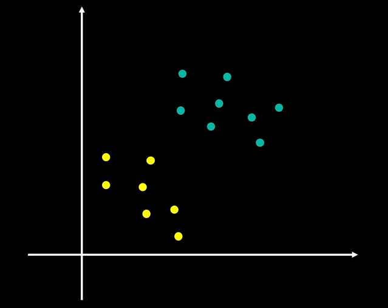
这个问题可以进一步推演到三维空间中，如何用一个二维平面区分两类数据，也可以更进一步推演至高维空间。
那么，以上问题可以被归纳为，为了区分两类数据，N N N M M M M − 1 M-1 M − 1
SVM算法
支持向量机（Support Vector Machine，SVM）是一种经典的监督学习算法，用于解决二分类和多分类问题。其核心思想是通过在特征空间中找到一个最优的超平面来进行分类，并且间隔最大。
间隔
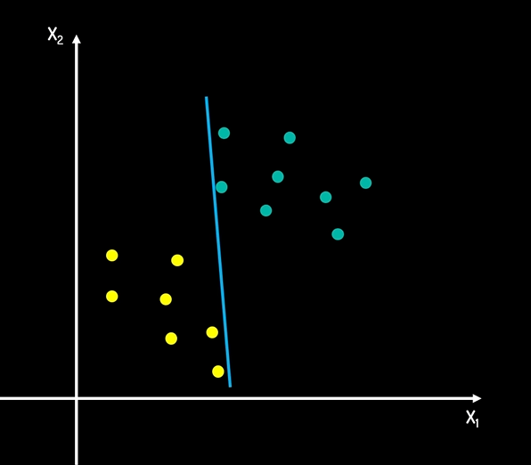 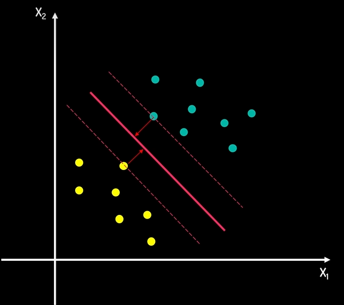
而第二种画法，两类数据中所有的点都与边界线有着一定的距离，我们把这个距离称为间隔，这个间隔起着缓冲的作用，把两类数据分隔开来。
间隔距离可以体现出两类数据的差异大小，间隔越大，意味着两类数据差异越大，区分就越容易，因此求解最佳决策边界线的问题就可以转化为求解最大间隔问题。
支持向量
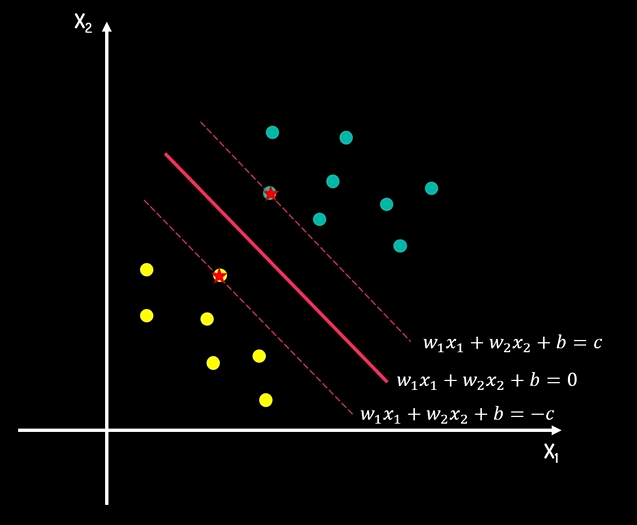
对于图中所示方程，我们分别同时除以 c c c
w 1 c x 1 + w 2 c x 2 + b c = 1 w 1 c x 1 + w 2 c x 2 + b c = 0 w 1 c x 1 + w 2 c x 2 + b c = − 1 \frac{w_1}{c}x_1+\frac{w_2}{c}x_2+\frac{b}{c}=1\\\frac{w_1}{c}x_1+\frac{w_2}{c}x_2+\frac{b}{c}=0\\\frac{w_1}{c}x_1+\frac{w_2}{c}x_2+\frac{b}{c}=-1
c w 1 x 1 + c w 2 x 2 + c b = 1 c w 1 x 1 + c w 2 x 2 + c b = 0 c w 1 x 1 + c w 2 x 2 + c b = − 1
由于 w c , b c \frac{w}{c},\frac{b}{c} c w , c b w , b w,b w , b
即 $$w_1x_1+w_2x_2+b=1\w_1x_1+w_2x_2+b=0\w_1x_1+w_2x_2+b=-1$$
这样我们就可以将上下两个个方程定义为正负超平面
损失因子
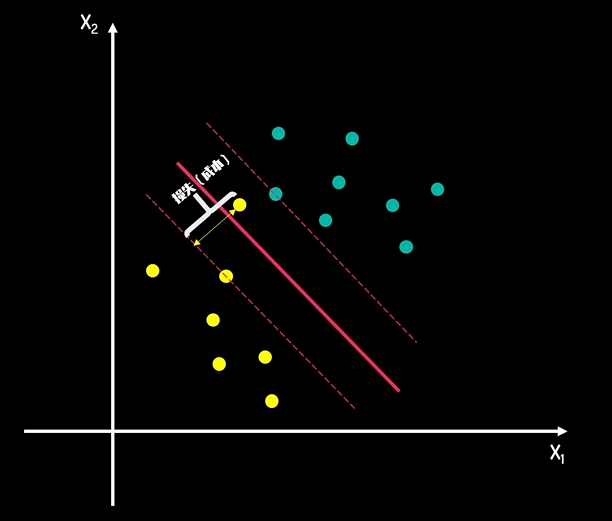
对于这种异常点，我们可以引入损失因子这个概念，所有违背规则的点都会有对应的损失值。
软间隔与硬间隔
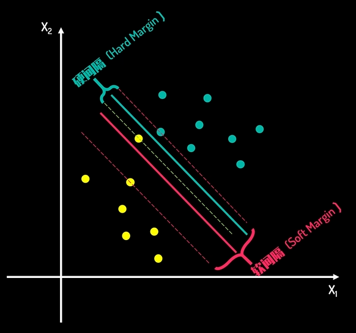
而之前推导出的间隔则被称为“硬间隔”
升维转化与核技巧(Kernel Trick)
什么是升维转化
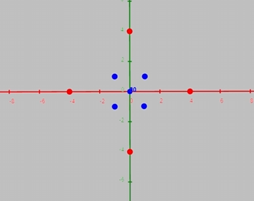
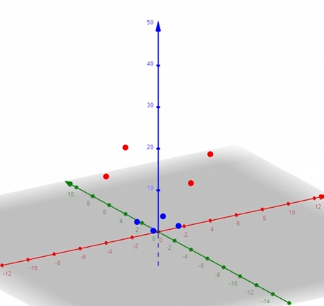
但如果我们通过升维转化，就可以在三维空间中进行求解了
所以，对于这些在低纬度下无法区分的数据，我们就可以采用类似的方法，通过合适的维度转化函数，将低纬数据进行升维，然后在高纬度下求解SVM模型
然而，提升维度需要我们有明确的维度转化函数，更多的储存需求以及计算需求
核函数
由于SVM的本质是量化两类数据差异的方法，而核函数能够提供高纬度相似度的测量，通过选取合适的核公式，我们就可以不用知道具体的维度转化函数，直接获取高纬度的数据差异度，从而来进行分类
求解SVM决策超平面
定义
训练数据及标签 ( x 1 , y 1 ) , ( x 2 , y 2 ) , . . . ( x N , y N ) (x_1,y_1),(x_2,y_2),...(x_N,y_N) ( x 1 , y 1 ) , ( x 2 , y 2 ) , ... ( x N , y N ) x i x_i x i y i y_i y i
线性模型：( w , b ) (w, b) ( w , b ) w T x + b = 0 w^Tx+b=0 w T x + b = 0
一个训练集线性可分是指
∃ ( w , b ) \exists(w,b) ∃ ( w , b ) ∀ i = 1 \forall i=1 ∀ i = 1 N N N y i = + 1 y_i=+1 y i = + 1 w T x i + b ≥ 0 w^Tx_i+b\ge0 w T x i + b ≥ 0 y i = − 1 y_i=-1 y i = − 1 w T x i + b < 0 w^Tx_i+b<0 w T x i + b < 0 y i ( w T x i + b ) ≥ 0 y_i(w^Tx_i+b)\ge0 y i ( w T x i + b ) ≥ 0
优化问题
最小化(Minimize)：∣ ∣ w ∣ ∣ 2 ||w||^2 ∣∣ w ∣ ∣ 2
限制条件(Subject to)：y i ( w T x i + b ) ≥ 0 , ( i = 1 ∼ N ) y_i(w^Tx_i+b)\ge0,(i=1\sim N) y i ( w T x i + b ) ≥ 0 , ( i = 1 ∼ N )
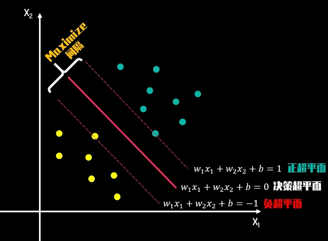x m , x n x_m,x_n x m , x n
1. w 1 x 1 m + w 2 x 2 m + b = 1 2. w 1 x 1 n + w 2 x 2 n + b = − 1 1.\ w_1x_{1m}+w_2x_{2m}+b=1\\2.\ w_1x_{1n}+w_2x_{2n}+b=-1
1. w 1 x 1 m + w 2 x 2 m + b = 1 2. w 1 x 1 n + w 2 x 2 n + b = − 1
等式1减等式2得
3. w 1 ( x 1 m − x 1 n ) + w 2 ( x 2 m − x 2 n ) = 2 即 4. w ⃗ ⋅ ( x ⃗ m − x ⃗ n ) = 2 \\3.\ w_1(x_{1m}-x_{1n})+w_2(x_{2m}-x_{2n})=2\\即4.\ \vec{w}\cdot(\vec{x}_m-\vec{x}_n)=2
3. w 1 ( x 1 m − x 1 n ) + w 2 ( x 2 m − x 2 n ) = 2 即 4. w ⋅ ( x m − x n ) = 2
同时，我们在决策超平面上取两个点 x o , x p x_o,x_p x o , x p
5. w 1 x 1 o + w 2 x 2 o + b = 0 6. w 1 x 1 p + w 2 x 2 p + b = 0 5.\ w_1x_{1o}+w_2x_{2o}+b=0\\6.\ w_1x_{1p}+w_2x_{2p}+b=0
5. w 1 x 1 o + w 2 x 2 o + b = 0 6. w 1 x 1 p + w 2 x 2 p + b = 0
等式5减去等式6得
7. w 1 ( x 1 o − x 1 p ) + w 2 ( x 2 o − x 2 p ) = 0 即 8. w ⃗ ⋅ ( x ⃗ o − x ⃗ p ) = 0 \\7.\ w_1(x_{1o}-x_{1p})+w_2(x_{2o}-x_{2p})=0\\即8.\ \vec{w}\cdot(\vec{x}_o-\vec{x}_p)=0
7. w 1 ( x 1 o − x 1 p ) + w 2 ( x 2 o − x 2 p ) = 0 即 8. w ⋅ ( x o − x p ) = 0
根据等式8可得，w ⃗ \vec{w} w x ⃗ o − x ⃗ p \vec{x}_o-\vec{x}_p x o − x p x o , x p x_o,x_p x o , x p w ⃗ \vec{w} w
回到 2 式，我们可以得
∣ x ⃗ m − x ⃗ n ∣ ∗ c o s θ ∗ ∣ w ⃗ ∣ = 2 ∣ x ⃗ m − x ⃗ n ∣ ∗ c o s θ = L L = 2 ∣ w ⃗ ∣ \left\vert \vec{x}_m-\vec{x}_n \right\vert *cos\theta *\left\vert \vec{w}\right\vert=2\\\left\vert \vec{x}_m-\vec{x}_n \right\vert *cos\theta=L\\L=\frac{2}{\left\vert \vec{w}\right\vert}
∣ x m − x n ∣ ∗ cos θ ∗ ∣ w ∣ = 2 ∣ x m − x n ∣ ∗ cos θ = L L = ∣ w ∣ 2
要求 L L L ∣ w ⃗ ∣ \left\vert \vec{w}\right\vert ∣ w ∣
SVM处理非线性
最小化：∣ ∣ w ∣ ∣ 2 2 + C ∑ i = 1 N ξ i , \frac{||w||^2}{2}+C\sum_{i=1}^N\xi_i, 2 ∣∣ w ∣ ∣ 2 + C ∑ i = 1 N ξ i , ξ i \xi_i ξ i
限制条件：
1. y i [ w T x + b ] ≥ 1 − ξ i 1.~y_i[w^Tx+b]\ge1-\xi_i 1. y i [ w T x + b ] ≥ 1 − ξ i ( i = 1 ∼ N ) (i=1\sim N) ( i = 1 ∼ N ) 2. ξ i ≥ 0 2.~\xi_i\ge0 2. ξ i ≥ 0
其中 C ∑ i = 1 N ξ i C\sum_{i=1}^N\xi_i C ∑ i = 1 N ξ i C C C
高维映射
函数 ϕ ( x ) \phi(x) ϕ ( x ) x x x → ϕ ( x ) \rightarrow \phi(x) → ϕ ( x )
此时，限制条件：y i [ w T ϕ ( x ) + b ] ≥ 1 − ξ i y_i[w^T\phi(x)+b]\ge1-\xi_i y i [ w T ϕ ( x ) + b ] ≥ 1 − ξ i ( i = 1 ∼ N ) (i=1\sim N) ( i = 1 ∼ N )
那么我们要如何选取这个函数呢，SVM给出的是
我们可以不知道无限维 ϕ ( x ) \phi(x) ϕ ( x ) K ( x 1 , x 2 ) = ϕ ( x 1 ) T ϕ ( x 2 ) K(x_1,x_2)=\phi(x_1)^T\phi(x_2) K ( x 1 , x 2 ) = ϕ ( x 1 ) T ϕ ( x 2 )
常用核函数
R b f Rbf R b f K ( x 1 , x 2 ) = e − ∣ ∣ x 1 − x 2 ∣ ∣ 2 2 σ 2 K(x_1,x_2)=e^{-\frac{||x_1-x_2||^2}{2\sigma^2}} K ( x 1 , x 2 ) = e − 2 σ 2 ∣∣ x 1 − x 2 ∣ ∣ 2 P l o y Ploy Pl oy K ( x 1 , x 2 ) = ( x 1 T x 2 + 1 ) d K(x_1,x_2)=({x_1}^Tx_2+1)^d K ( x 1 , x 2 ) = ( x 1 T x 2 + 1 ) d L i n e a r Linear L in e a r K ( x 1 , x 2 ) = x 1 T x 2 K(x_1,x_2)={x_1}^Tx_2 K ( x 1 , x 2 ) = x 1 T x 2 T a n h Tanh T anh K ( x 1 , x 2 ) = t a n h ( β x 1 T x 2 + b ) , t a n h = e x − e − x e x + e − x K(x_1,x_2)=tanh(\beta{x_1}^Tx_2+b),tanh=\frac{e^x-e^{-x}}{e^x+e^{-x}} K ( x 1 , x 2 ) = t anh ( β x 1 T x 2 + b ) , t anh = e x + e − x e x − e − x
Mercer`s Theorem
K ( x 1 , x 2 ) K(x_1,x_2) K ( x 1 , x 2 ) ϕ ( x 1 ) T ϕ ( x 2 ) \phi(x_1)^T\phi(x_2) ϕ ( x 1 ) T ϕ ( x 2 )
K ( x 1 , x 2 ) = K ( x 2 , x 1 ) K(x_1,x_2)=K(x_2,x_1) K ( x 1 , x 2 ) = K ( x 2 , x 1 ) ∀ c i , x i \forall c_i,x_i ∀ c i , x i ∑ i = 1 N ∑ j = 1 N c i c j K ( x i , x j ) ≥ 0 \sum_{i=1}^N\sum_{j=1}^Nc_ic_jK(x_i,x_j)\ge0 ∑ i = 1 N ∑ j = 1 N c i c j K ( x i , x j ) ≥ 0
优化理论
原问题(Prime Problem)
最小化：f ( w ) f(w) f ( w )
限制条件：
g i ( w ) ≤ 0 , ( i = 1 ∼ K ) g_i(w)\le0,(i=1\sim K) g i ( w ) ≤ 0 , ( i = 1 ∼ K ) h i ( w ) = 0 , ( i = 1 ∼ M ) h_i(w)=0,(i=1\sim M) h i ( w ) = 0 , ( i = 1 ∼ M )
对偶问题(Dual Problem)
L ( w , α , β ) = f ( w ) + ∑ i = 1 K α i g i ( w ) + ∑ i = 1 M β i h i ( w ) = f ( w ) + α T g ( w ) + β T h ( w ) L(w,\alpha,\beta)=f(w)+\sum_{i=1}^K\alpha_ig_i(w)+\sum_{i=1}^M\beta_ih_i(w)\\=f(w)+\alpha^Tg(w)+\beta^Th(w)
L ( w , α , β ) = f ( w ) + i = 1 ∑ K α i g i ( w ) + i = 1 ∑ M β i h i ( w ) = f ( w ) + α T g ( w ) + β T h ( w )
对偶问题定义：
最大化：θ ( α , β ) = m i n 所有 w ( L ( w , α , β ) ) \theta(\alpha,\beta)=min_{所有w}(L(w,\alpha,\beta)) θ ( α , β ) = mi n 所有 w ( L ( w , α , β ))
限制条件：α i ≥ 0 , ( i = 1 ∼ K ) \alpha_i\ge0,(i=1\sim K) α i ≥ 0 , ( i = 1 ∼ K )
定理：如果 w ∗ w^* w ∗ α ∗ , β ∗ \alpha^*,\beta^* α ∗ , β ∗ f ( w ∗ ) ≥ θ ( α ∗ , β ∗ ) f(w^*)\ge\theta(\alpha^*,\beta^*) f ( w ∗ ) ≥ θ ( α ∗ , β ∗ )
证明：θ ( α ∗ , β ∗ ) = m i n ( L ( w , α ∗ , β ∗ ) ) ≤ L ( w ∗ , α ∗ , β ∗ ) = f ( w ∗ ) + ∑ i = 1 K α i ∗ g ( w ∗ ) + ∑ i = 1 M β i ∗ f ( w ∗ ) \theta(\alpha^*,\beta^*)=min(L(w,\alpha^*,\beta^*))\le L(w^*,\alpha^*,\beta^*)=f(w^*)+\sum_{i=1}^K\alpha_i^*g(w^*)+\sum_{i=1}^M\beta_i^*f(w^*) θ ( α ∗ , β ∗ ) = min ( L ( w , α ∗ , β ∗ )) ≤ L ( w ∗ , α ∗ , β ∗ ) = f ( w ∗ ) + ∑ i = 1 K α i ∗ g ( w ∗ ) + ∑ i = 1 M β i ∗ f ( w ∗ ) w ∗ w^* w ∗ g i ( w ∗ ) ≤ 0 , h i ( w ∗ ) = 0 g_i(w^*)\le0,h_i(w^*)=0 g i ( w ∗ ) ≤ 0 , h i ( w ∗ ) = 0 α i ≥ 0 \alpha_i\ge0 α i ≥ 0 L ( w ∗ , α ∗ , β ∗ ) ≤ f ( w ∗ ) L(w^*,\alpha^*,\beta^*)\le f(w^*) L ( w ∗ , α ∗ , β ∗ ) ≤ f ( w ∗ ) θ ( α ∗ , β ∗ ) ≤ f ( w ∗ ) \theta(\alpha^*,\beta^*)\le f(w^*) θ ( α ∗ , β ∗ ) ≤ f ( w ∗ )
定义：G = f ( w ∗ ) − θ ( α ∗ , β ∗ ) ≥ 0 G=f(w^*)-\theta(\alpha^*,\beta^*)\ge0 G = f ( w ∗ ) − θ ( α ∗ , β ∗ ) ≥ 0 G G G
对于某些特定的优化问题，可以证明间距 G = 0 G=0 G = 0
强对偶定理：若 f ( w ) f(w) f ( w ) g ( w ) = A w + b , h ( w ) = C w + d g(w)=Aw+b,h(w)=Cw+d g ( w ) = A w + b , h ( w ) = Cw + d f ( w ∗ ) = θ ( α ∗ , β ∗ ) f(w^*)=\theta(\alpha^*,\beta^*) f ( w ∗ ) = θ ( α ∗ , β ∗ )
若满足强对偶定理，则对 ∀ i = 1 ∼ K \forall i=1\sim K ∀ i = 1 ∼ K α i = 0 \alpha_i=0 α i = 0 g i ∗ ( w ∗ ) = 0 g_i^*(w^*)=0 g i ∗ ( w ∗ ) = 0
SVM原问题转化为对偶问题
原问题
最小化：∣ ∣ w ∣ ∣ 2 w + C ∑ i = 1 N ξ i \frac{||w||^2}{w}+C\sum_{i=1}^N\xi_i w ∣∣ w ∣ ∣ 2 + C ∑ i = 1 N ξ i
限制条件：
y i [ w T ϕ ( x i ) + b ] ≥ 1 − ξ i y_i[w^T\phi(x_i)+b]\ge1-\xi_i y i [ w T ϕ ( x i ) + b ] ≥ 1 − ξ i ξ i ≥ 0 \xi_i\ge0 ξ i ≥ 0
为了使其和上面的形式对应，我们可以稍作修改
最小化：∣ ∣ w ∣ ∣ 2 w − C ∑ i = 1 N ξ i \frac{||w||^2}{w}-C\sum_{i=1}^N\xi_i w ∣∣ w ∣ ∣ 2 − C ∑ i = 1 N ξ i
限制条件：
y i [ w T ϕ ( x i ) + b ] ≥ 1 + ξ i ⇒ 1 + ξ i − y i w T ϕ ( x i ) − y i b ≤ 0 y_i[w^T\phi(x_i)+b]\ge1+\xi_i\Rightarrow1+\xi_i-y_iw^T\phi(x_i)-y_ib\le0 y i [ w T ϕ ( x i ) + b ] ≥ 1 + ξ i ⇒ 1 + ξ i − y i w T ϕ ( x i ) − y i b ≤ 0 ξ i ≤ 0 , ( i = 1 ∼ K ) \xi_i\le0,(i=1\sim K) ξ i ≤ 0 , ( i = 1 ∼ K )
即将 2 K 2K 2 K g i g_i g i h i h_i h i
对偶问题
最大化：θ ( α , β ) = m i n w , ξ i , b ( L ( w , ξ i , b ) = ∣ ∣ w ∣ ∣ 2 2 − C ∑ i = 1 N ξ i + ∑ i = 1 N β i ξ i + ∑ i = 1 N α i [ 1 + ξ i − y i w T ϕ ( x i ) − y i b ] ) \theta(\alpha,\beta)=min_{w,\xi_i,b}(L(w,\xi_i,b)=\frac{||w||^2}{2}-C\sum_{i=1}^N\xi_i+\sum_{i=1}^N\beta_i\xi_i+\sum_{i=1}^N\alpha_i[1+\xi_i-y_iw^T\phi(x_i)-y_ib]) θ ( α , β ) = mi n w , ξ i , b ( L ( w , ξ i , b ) = 2 ∣∣ w ∣ ∣ 2 − C ∑ i = 1 N ξ i + ∑ i = 1 N β i ξ i + ∑ i = 1 N α i [ 1 + ξ i − y i w T ϕ ( x i ) − y i b ])
限制条件：
α ≥ 0 , ( i = 1 ∼ N ) \alpha\ge0,(i=1\sim N) α ≥ 0 , ( i = 1 ∼ N ) β i ≥ 0 \beta_i\ge0 β i ≥ 0
对 L L L ∂ L ∂ w = 0 , ∂ L ∂ ξ i = 0 , ∂ L ∂ b = 0 \frac{\partial L}{\partial w}=0,\frac{\partial L}{\partial\xi_i}=0,\frac{\partial L}{\partial b}=0 ∂ w ∂ L = 0 , ∂ ξ i ∂ L = 0 , ∂ b ∂ L = 0
w − ∑ i = 1 N α i y i ϕ ( x i ) = 0 − C + β i + α i = 0 − ∑ i = 1 N α i β i = 0 w-\sum_{i=1}^N\alpha_iy_i\phi(x_i)=0\\-C+\beta_i+\alpha_i=0\\-\sum_{i=1}^N\alpha_i\beta_i=0
w − i = 1 ∑ N α i y i ϕ ( x i ) = 0 − C + β i + α i = 0 − i = 1 ∑ N α i β i = 0
先代入第二三个等式
θ ( α , β ) = m i n ( ∣ ∣ w ∣ ∣ 2 2 + ∑ i = 1 N α i [ 1 − y i w T ϕ ( x i ) − y i b ] ) = m i n ( ∣ ∣ w ∣ ∣ 2 2 + ∑ i = 1 N α i [ 1 − y i w T ϕ ( x i ) ] \theta(\alpha,\beta)=min(\frac{||w||^2}{2}+\sum_{i=1}^N\alpha_i[1-y_iw^T\phi(x_i)-y_ib])=min(\frac{||w||^2}{2}+\sum_{i=1}^N\alpha_i[1-y_iw^T\phi(x_i)]
θ ( α , β ) = min ( 2 ∣∣ w ∣ ∣ 2 + i = 1 ∑ N α i [ 1 − y i w T ϕ ( x i ) − y i b ]) = min ( 2 ∣∣ w ∣ ∣ 2 + i = 1 ∑ N α i [ 1 − y i w T ϕ ( x i )]
1 2 ∣ ∣ w ∣ ∣ 2 = 1 2 ( ∑ i = 1 N α i y i ϕ ( x i ) ) T ( ∑ j = 1 N α i y i ϕ ( x i ) ) = 1 2 ∑ i = 1 N ∑ j = 1 N α i α j y i y j ϕ ( x i ) T ϕ ( x j ) = 1 2 ∑ i = 1 N ∑ j = 1 N α i α j y i y j K ( x i , x j ) \frac{1}{2}||w||^2=\frac{1}{2}(\sum_{i=1}^N\alpha_iy_i\phi(x_i))^T(\sum_{j=1}^N\alpha_iy_i\phi(x_i))=\frac{1}{2}\sum_{i=1}^N\sum_{j=1}^N\alpha_i\alpha_jy_iy_j\phi(x_i)^T\phi(x_j)\\=\frac{1}{2}\sum_{i=1}^N\sum_{j=1}^N\alpha_i\alpha_jy_iy_jK(x_i,x_j)
2 1 ∣∣ w ∣ ∣ 2 = 2 1 ( i = 1 ∑ N α i y i ϕ ( x i ) ) T ( j = 1 ∑ N α i y i ϕ ( x i )) = 2 1 i = 1 ∑ N j = 1 ∑ N α i α j y i y j ϕ ( x i ) T ϕ ( x j ) = 2 1 i = 1 ∑ N j = 1 ∑ N α i α j y i y j K ( x i , x j )
− ∑ i = 1 N α i y i w T ϕ ( x i ) = − ∑ i = 1 N α i y i ( ∑ j = 1 N α j y j ϕ ( x j ) ) ϕ ( x i ) = − ∑ i = 1 N ∑ j = 1 N α i α j y i y j ϕ ( x j ) T ϕ ( x i ) = − ∑ i = 1 N ∑ j = 1 N α i α j y i y j K ( x i , x j ) -\sum_{i=1}^N\alpha_iy_iw^T\phi(x_i)=-\sum_{i=1}^N\alpha_iy_i(\sum_{j=1}^N\alpha_jy_j\phi(x_j))\phi(x_i)\\=-\sum_{i=1}^N\sum_{j=1}^N\alpha_i\alpha_jy_iy_j\phi(x_j)^T\phi(x_i)\\=-\sum_{i=1}^N\sum_{j=1}^N\alpha_i\alpha_jy_iy_jK(x_i,x_j)
− i = 1 ∑ N α i y i w T ϕ ( x i ) = − i = 1 ∑ N α i y i ( j = 1 ∑ N α j y j ϕ ( x j )) ϕ ( x i ) = − i = 1 ∑ N j = 1 ∑ N α i α j y i y j ϕ ( x j ) T ϕ ( x i ) = − i = 1 ∑ N j = 1 ∑ N α i α j y i y j K ( x i , x j )
最大化：θ ( α ) = ∑ i = 1 N α i − 1 2 ∑ i = 1 N ∑ j = 1 N α i α j y i y j K ( x i , x j ) \theta(\alpha)=\sum_{i=1}^N\alpha_i-\frac{1}{2}\sum_{i=1}^N\sum_{j=1}^N\alpha_i\alpha_jy_iy_jK(x_i,x_j) θ ( α ) = ∑ i = 1 N α i − 2 1 ∑ i = 1 N ∑ j = 1 N α i α j y i y j K ( x i , x j )
限制条件：
α i ≥ 0 , β ≥ 0 , α i + β i = C ⇒ 0 ≤ α i ≤ C \alpha_i\ge0,\beta\ge0,\alpha_i+\beta_i=C\Rightarrow0\le\alpha_i\le C α i ≥ 0 , β ≥ 0 , α i + β i = C ⇒ 0 ≤ α i ≤ C ∑ i = 1 N α i y i = 0 \sum_{i=1}^N\alpha_iy_i=0 ∑ i = 1 N α i y i = 0
可用 SMO 算法求解 α \alpha α
测试流程
虽然现在已经转化为了对偶问题，但是我们要求的是 w , b w,b w , b w w w ϕ ( x ) \phi(x) ϕ ( x ) X X X w w w x x x
若 w T ϕ ( x ) + b ≥ 0 w^T\phi(x)+b\ge0 w T ϕ ( x ) + b ≥ 0 y = + 1 y=+1 y = + 1
若 w T ϕ ( x ) + b ≤ 0 w^T\phi(x)+b\le0 w T ϕ ( x ) + b ≤ 0 y = − 1 y=-1 y = − 1
而 w T ϕ ( x ) = ∑ i = 1 N [ α i y i ϕ ( x i ) ] T ϕ ( x ) = ∑ i = 1 N α i y i ϕ ( x i ) T ϕ ( x ) = ∑ i = 1 N α i y i K ( x i , x ) w^T\phi(x)=\sum_{i=1}^N[\alpha_iy_i\phi(x_i)]^T\phi(x)=\sum_{i=1}^N\alpha_iy_i\phi(x_i)^T\phi(x)=\sum_{i=1}^N\alpha_iy_iK(x_i,x) w T ϕ ( x ) = ∑ i = 1 N [ α i y i ϕ ( x i ) ] T ϕ ( x ) = ∑ i = 1 N α i y i ϕ ( x i ) T ϕ ( x ) = ∑ i = 1 N α i y i K ( x i , x ) ϕ ( x ) \phi(x) ϕ ( x )
而对于 b b b ∀ i = 1 ∼ N \forall i=1\sim N ∀ i = 1 ∼ N
要么 β i = 0 \beta_i=0 β i = 0 ξ i = 0 \xi_i=0 ξ i = 0
要么 α i = 0 \alpha_i=0 α i = 0 1 + ξ i − y i w T ϕ ( x i ) − y i b = 0 1+\xi_i-y_iw^T\phi(x_i)-y_ib=0 1 + ξ i − y i w T ϕ ( x i ) − y i b = 0
取 0 < α i < C ⇒ β i = C − α i > 0 0<\alpha_i<C\Rightarrow \beta_i=C-\alpha_i>0 0 < α i < C ⇒ β i = C − α i > 0
此时 β ≠ 0 ⇒ ξ i = 0 \beta \ne0\Rightarrow \xi_i=0 β = 0 ⇒ ξ i = 0 α i ≠ 0 ⇒ 1 + ξ i − y i w T ϕ ( x i ) − y i b = 0 \alpha_i\ne0\Rightarrow 1+\xi_i-y_iw^T\phi(x_i)-y_ib=0 α i = 0 ⇒ 1 + ξ i − y i w T ϕ ( x i ) − y i b = 0
b = 1 − y i w T ϕ ( x i ) y i = 1 − y i ∑ j = 1 N α j y j K ( x i , x j ) y i b=\frac{1-y_iw^T\phi(x_i)}{y_i}=\frac{1-y_i\sum_{j=1}^N\alpha_jy_jK(x_i,x_j)}{y_i} b = y i 1 − y i w T ϕ ( x i ) = y i 1 − y i ∑ j = 1 N α j y j K ( x i , x j )
总结
训练流程
输入{ ( x i , y i ) } i = 1 ∼ N \{(x_i,y_i)\}_i=1\sim N {( x i , y i ) } i = 1 ∼ N θ ( α ) = ∑ i = 1 N α i − 1 2 α i α j y i y j K ( x i , x j ) \theta(\alpha)=\sum_{i=1}^N\alpha_i-\frac{1}{2}\alpha_i\alpha_jy_iy_jK(x_i,x_j) θ ( α ) = ∑ i = 1 N α i − 2 1 α i α j y i y j K ( x i , x j )
0 ≤ α ≤ C 0\le\alpha\le C 0 ≤ α ≤ C ∑ i = 1 N α i y i = 0 \sum_{i=1}^N\alpha_iy_i=0 ∑ i = 1 N α i y i = 0 b b b 0 < α i < C 0<\alpha_i<C 0 < α i < C b = 1 − y i w T ϕ ( x i ) y i = 1 − y i ∑ j = 1 N α j y j K ( x i , x j ) y i b=\frac{1-y_iw^T\phi(x_i)}{y_i}=\frac{1-y_i\sum_{j=1}^N\alpha_jy_jK(x_i,x_j)}{y_i} b = y i 1 − y i w T ϕ ( x i ) = y i 1 − y i ∑ j = 1 N α j y j K ( x i , x j )
测试流程
输入测试样本 x x x
若 ∑ i = 1 N α i y i K ( x i , x ) + b ≥ 0 \sum_{i=1}^N\alpha_iy_iK(x_i,x)+b\ge0 ∑ i = 1 N α i y i K ( x i , x ) + b ≥ 0 y = + 1 y=+1 y = + 1
若 ∑ i = 1 N α i y i K ( x i , x ) + b < 0 \sum_{i=1}^N\alpha_iy_iK(x_i,x)+b<0 ∑ i = 1 N α i y i K ( x i , x ) + b < 0 y = − 1 y=-1 y = − 1
ROC曲线
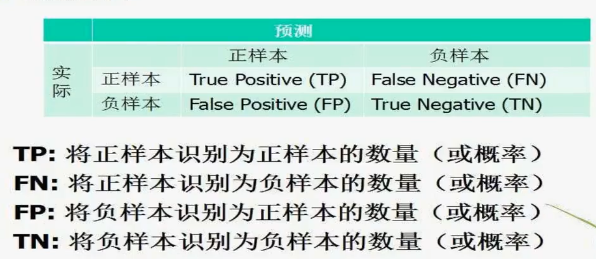
四个概率的TP，FP，TN，FN的关系
TP+FN=1
FP+TN=1
对于同一个系统来说，若TP增加，则FP也增加
ROC曲线
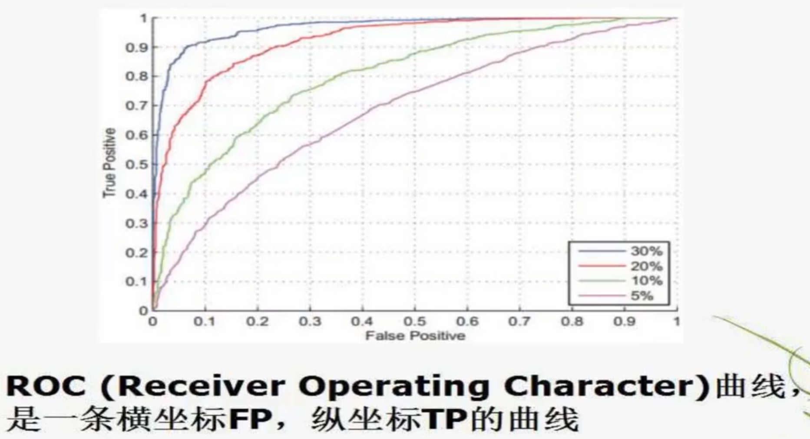
等错误率(Equal Error Rate,EER)是两类错误FP和FN相等时的错误率，可以直观的表示系统性能
支持向量机的应用
兵王问题
国际象棋中黑方只剩一个王，白方剩一个兵一个王
两种可能：
用SVM解兵王问题
样本解释
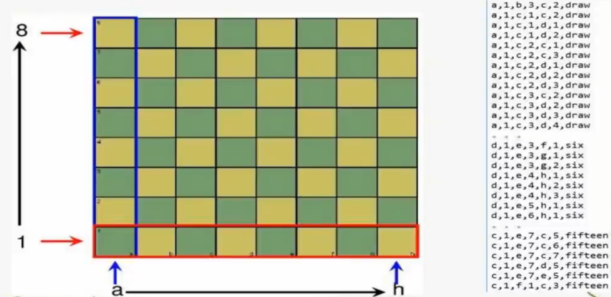
draw：双方棋子在这个位置上，双方平局
six：双方棋子在这个位置上，在方都不犯错的情况下，六步后黑方被白方将死
fifteen：双方棋子在这个位置上，在方都不犯错的情况下，十五步后黑方被白方将死
求解过程
总样本数 28056，其中正样本 2796，负样本 25260
随机取 5000 个样本训练，其余测试
样本归一化，在训练样本上，求出每个维度的均值和方差，在训练和测试样本上同时归一化
n e w X = X − m e a n ( X s t d ( X ) newX=\frac{X-mean(X}{std(X)}
n e wX = s t d ( X ) X − m e an ( X
高斯核
5 − f o l d c r o s s v a l i d a t i o n 5-fold cross validation 5 − f o l d cross v a l i d a t i o n C S c a l e = [ 2 − 5 , 2 15 ] ; g a m m a = [ 2 − 15 , 2 3 ] ; CScale=[2^{-5},2^{15}];gamma=[2^{-15},2^3]; CS c a l e = [ 2 − 5 , 2 15 ] ; g amma = [ 2 − 15 , 2 3 ] ;
训练所用工具包
数据处理
由于数据集中给出来的坐标包含字母，机器无法识别，所以我们需要将其转化为数字
对于 draw 我们将其赋值 +1，其他的则为 -1
将数据集的 20 % 20\% 20%
在训练样本上求出每个维度的均值和标准差，在训练和测试样本上同时归一化
import numpy as npimport pandas as pdfrom sklearn.model_selection import train_test_splitfrom sklearn.preprocessing import StandardScalerdef replace_letters_with_numbers (input_file ): mapping = {'a' : '1' , 'b' : '2' , 'c' : '3' , 'd' : '4' , 'e' : '5' , 'f' : '6' , 'g' : '7' , 'h' : '8' } with open (input_file, 'r' ) as infile: lines = infile.readlines() result = [] for line in lines: fields = line.strip().split(',' ) for i in range (len (fields) - 1 ): for letter, number in mapping.items(): fields[i] = fields[i].replace(letter, number) if fields[-1 ].strip().lower() == 'draw' : fields[-1 ] = '1' else : fields[-1 ] = '-1' result.append(',' .join(fields)) processed_data = [line.split(',' ) for line in result] df = pd.DataFrame(processed_data, dtype=np.float32) return df def process_and_split_data (df ): X = df.iloc[:, :-1 ] y = df.iloc[:, -1 ] X_train, X_test, y_train, y_test = train_test_split(X, y, test_size=0.8 , random_state=42 ) scaler = StandardScaler() X_train_scaled = scaler.fit_transform(X_train) X_test_scaled = scaler.transform(X_test) return X_train_scaled, X_test_scaled, y_train, y_test input_file = 'krkopt.data' df = replace_letters_with_numbers(input_file) X_train_scaled, X_test_scaled, y_train, y_test = process_and_split_data(df) train_data_scaled = pd.DataFrame(X_train_scaled) test_data_scaled = pd.DataFrame(X_test_scaled) train_data_scaled.to_csv('train_scaled.csv' , index=False ) test_data_scaled.to_csv('test_scaled.csv' , index=False )
训练模型及参数设置
常用的 LibSVM 参数
-s : SVM 类型
常用的 -s 参数值：
0 ：C-SVC（分类任务的标准C-SVM）1 ：ν-SVC（分类任务的另一种形式，使用 ν 来控制支持向量）2 ：ε-SVR（回归任务，支持向量回归）3 ：ν-SVR（回归任务的另一种形式）4 ：一类 SVM（用于分布估计或异常检测）
示例：-s 0 表示使用 C-SVC 类型的 SVM（最常见的分类SVM）。
-t : 核函数类型
常用的 -t 参数值：
0 ：线性核（Linear Kernel）1 ：多项式核（Polynomial Kernel）2 ：径向基核（RBF Kernel, Radial Basis Function）3 ：Sigmoid 核
示例：-t 2 表示使用 RBF 核函数（最常用的核函数之一）。
-c : 惩罚系数 C
C 值较大：模型复杂度较高，容易过拟合。
C 值较小：模型复杂度较低，容易欠拟合。
示例：-c 1 表示惩罚系数为 1（这是默认值）。
-g : γ（Gamma）参数
适用于核函数 -t 1（多项式核）、-t 2（RBF 核）、-t 3（Sigmoid 核）。
Gamma 是控制非线性映射的超参数，较小的值可能导致欠拟合，而较大的值则可能导致过拟合。
示例：-g 0.1 表示 Gamma 参数为 0.1。
-d : 多项式核的度-t 1（多项式核）时有效。
示例：-d 3 表示使用三次多项式核。
-r : 多项式核的系数-t 1）时，-r 参数用于控制核函数中的偏置项。
示例：-r 1 表示多项式核函数中的偏置系数为 1。
-n : ν 参数ν-SVC、ν-SVR 和一类 SVM 中使用，它控制模型中的支持向量个数。值域在 (0, 1) 之间。
在 ν-SVC 中，ν 代表支持向量所占的比例。
在 ν-SVR 中，ν 是控制容忍误差的参数。
示例：-n 0.5 表示使用 0.5 作为 ν 值。
-p : ε 参数（ε-SVR）
示例：-p 0.1 表示 ε 为 0.1。
-h : 启用/禁用启发式收敛-h 参数用于加速训练过程，默认为 1，表示启用启发式收敛。启发式收敛能够在大多数情况下加速模型的训练，但有时也可能影响模型的最终准确性。
-h 0：禁用启发式收敛。-h 1：启用启发式收敛。
示例：-h 0 表示禁用启发式收敛。
-b : 是否输出概率估计-b 1。
示例：-b 1 表示启用概率估计（SVM 支持二分类和多分类的概率估计）。
-m : 内存限制（MB）
示例：-m 200 表示允许最大内存为 200MB。
-v : 交叉验证-v 参数用于设置 k-fold 交叉验证的 k 值。如果设置该参数，LibSVM 将执行 k 折交叉验证，并输出交叉验证的结果，而不是训练一个最终模型。
示例：-v 5 表示执行 5 折交叉验证。
-w : 类别权重-w 参数可以为每个类别指定不同的权重，使得模型在处理不平衡数据时更倾向于少数类。权重的格式是 -wlabel=value，其中 label 是类标签，value 是权重值。
示例：-w1 1 -w-1 5 表示将正类（1）的权重设置为 1，负类（-1）的权重设置为 5。
训练代码
def TrainModelSVM (data, label, iter , model_file ): ''' data: 数据 label: 标签 iter: 训练次数 model_file: 模型的保存位置 ''' X = data.tolist() Y = label.tolist() CScale = [-5 , -3 , -1 , 1 , 3 , 5 , 7 , 9 , 11 , 13 , 15 ] gammaScale = [-15 , -13 , -11 , -9 , -7 , -5 , -3 , -1 , 1 , 3 ] cnt = iter step = 2 maxACC = 0 bestACC_C = 0 bestACC_gamma = 0 prob = svm_problem(Y, X) while (cnt): maxACC_train, maxACC_C_train, maxACC_gamma_train = TrainModel(CScale, gammaScale, prob) if (maxACC_train > maxACC): maxACC = maxACC_train bestACC_C = maxACC_C_train bestACC_gamma = maxACC_gamma_train new_step = step*2 /10 CScale = getNewList(maxACC_C_train - step, maxACC_C_train + step + new_step, new_step) gammaScale = getNewList(maxACC_gamma_train - step, maxACC_gamma_train + step + new_step, new_step) cnt -= 1 C = pow (2 , bestACC_C) gamma = pow (2 , bestACC_gamma) param = svm_parameter('-t 2 -c ' + str (C) + ' -g ' + str (gamma)) model = svm_train(prob, param) svm_save_model(model_file, model) return model
CScale ：参数 C 的初始搜索范围。C 是 SVM 的惩罚系数，用来控制模型对误分类的容忍度，值越大表示模型越不容忍误分类，越容易过拟合。C 的值是 2 的指数形式
CScale = [-5, -3, -1, 1, 3, 5, 7, 9, 11, 13, 15]，表示 C 参数会取值 2^-5, 2^-3, … 2^15。
gammaScale ：参数 γ 的初始搜索范围，γ 是 RBF 核中的参数，用来控制单个训练样本的影响范围。γ 的值也是 2 的指数形式。
gammaScale = [-15, -13, -11, -9, -7, -5, -3, -1, 1, 3]，表示 γ 参数会取值 2^-15, 2^-13, … 2^3
迭代搜索
在每次迭代中，函数会通过 TrainModel(CScale, gammaScale, prob) 对当前的 C 和 γ 参数组合进行训练，找到当前迭代中的最佳参数组合和最高的准确率。
训练函数 TrainModel(CScale, gammaScale, prob) ：
这个函数没有在代码中提供，但从上下文可以看出，它会接受 CScale 和 gammaScale，并执行网格搜索来找到最高的准确率和最优的 C 、γ 组合。
prob 是通过 svm_problem 函数将标签和数据传递给 SVM 的格式。
精度调整 ：在每次找到当前最优参数后，函数会通过 getNewList 函数根据当前最优的 C 和 γ 生成新的搜索范围，缩小步长以精细搜索最佳参数。step 是调整搜索范围的关键，new_step 是通过减少步长进行更精确的搜索。
完整代码
import numpy as npimport pandas as pdfrom sklearn.model_selection import train_test_splitfrom sklearn.preprocessing import StandardScalerfrom libsvm.svmutil import *from sklearn.metrics import roc_curve, aucdef replace_letters_with_numbers (input_file ): mapping = {'a' : '1' , 'b' : '2' , 'c' : '3' , 'd' : '4' , 'e' : '5' , 'f' : '6' , 'g' : '7' , 'h' : '8' } with open (input_file, 'r' ) as infile: lines = infile.readlines() result = [] for line in lines: fields = line.strip().split(',' ) for i in range (len (fields) - 1 ): for letter, number in mapping.items(): fields[i] = fields[i].replace(letter, number) if fields[-1 ].strip().lower() == 'draw' : fields[-1 ] = '1' else : fields[-1 ] = '-1' result.append(',' .join(fields)) processed_data = [line.split(',' ) for line in result] df = pd.DataFrame(processed_data, dtype=np.float32) return df def process_and_split_data (df ): X = df.iloc[:, :-1 ] y = df.iloc[:, -1 ] X_train, X_test, y_train, y_test = train_test_split(X, y, test_size=0.8 , random_state=42 ) scaler = StandardScaler() X_train_scaled = scaler.fit_transform(X_train) X_test_scaled = scaler.transform(X_test) return X_train_scaled, X_test_scaled, y_train, y_test def TrainModel (CScale, gammaScale, prob ): ''' CScale: 参数C的取值序列 gammaScale: 参数γ的取值序列 prob: 训练集合对应的标签 ''' maxACC = 0 maxACC_C = 0 maxACC_gamma = 0 for C in CScale: C_ = pow (2 , C) for gamma in gammaScale: gamma_ = pow (2 , gamma) param = svm_parameter('-t 2 -c ' + str (C_) + ' -g ' + str (gamma_) + ' -v 5 -q' ) ACC = svm_train(prob, param) if (ACC > maxACC): maxACC = ACC maxACC_C = C maxACC_gamma = gamma return maxACC, maxACC_C, maxACC_gamma def getNewList (L, U, step ): l = [] while (L < U): l.append(L) L += step return l def TrainModelSVM (data, label, iter , model_file ): X = data.tolist() Y = label.tolist() CScale = [-5 , -3 , -1 , 1 , 3 , 5 , 7 , 9 , 11 , 13 , 15 ] gammaScale = [-15 , -13 , -11 , -9 , -7 , -5 , -3 , -1 , 1 , 3 ] cnt = iter step = 2 maxACC = 0 bestACC_C = 0 bestACC_gamma = 0 prob = svm_problem(Y, X) while (cnt): maxACC_train, maxACC_C_train, maxACC_gamma_train = TrainModel(CScale, gammaScale, prob) if (maxACC_train > maxACC): maxACC = maxACC_train bestACC_C = maxACC_C_train bestACC_gamma = maxACC_gamma_train new_step = step*2 /10 CScale = getNewList(maxACC_C_train - step, maxACC_C_train + step + new_step, new_step) gammaScale = getNewList(maxACC_gamma_train - step, maxACC_gamma_train + step + new_step, new_step) cnt -= 1 C = pow (2 , bestACC_C) gamma = pow (2 , bestACC_gamma) param = svm_parameter('-t 2 -c ' + str (C) + ' -g ' + str (gamma)) model = svm_train(prob, param) svm_save_model(model_file, model) return model def main (): mode_file = r"C:\Users\24843\Desktop\python\model.file" input_file = 'krkopt_raw.data' df = replace_letters_with_numbers(input_file) X_train_scaled, X_test_scaled, y_train, y_test = process_and_split_data(df) iter = 2 if (input ("是否需要进行训练？" ) == 'y' ): model = TrainModelSVM(X_train_scaled, y_train, iter , mode_file) else : model = svm_load_model(mode_file) X = X_test_scaled.tolist() Y = y_test.tolist() p_labs, p_acc, p_vals = svm_predict(Y, X, model) fpr, tpr, threshold = roc_curve(y_test, p_labs) roc_auc = auc(fpr, tpr) print (roc_auc) if __name__ == "__main__" : main()